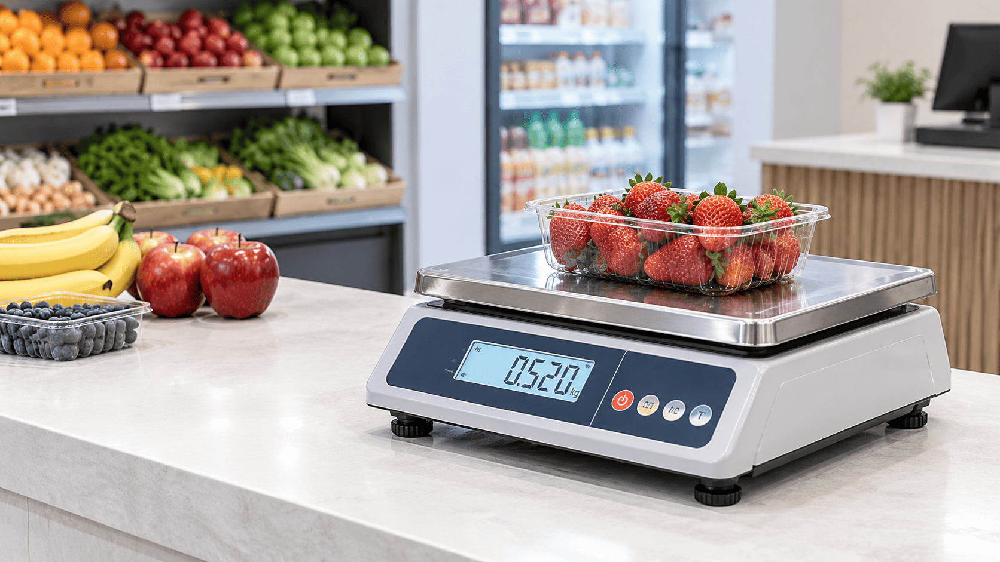
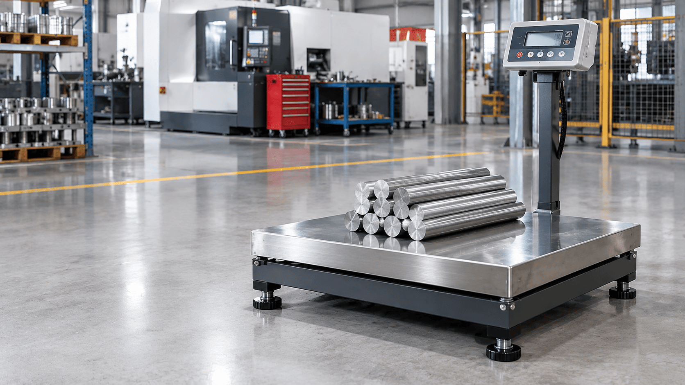
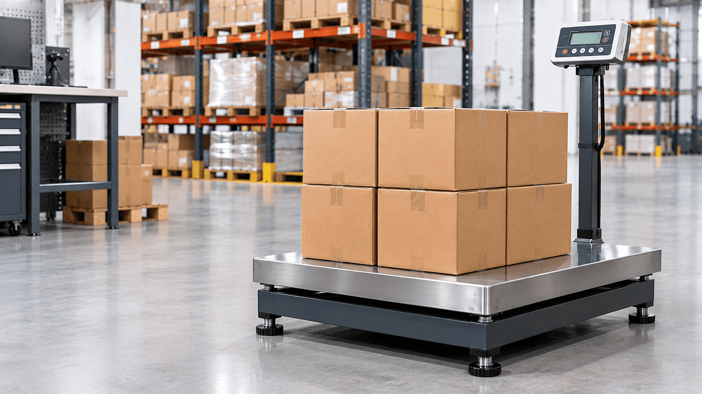
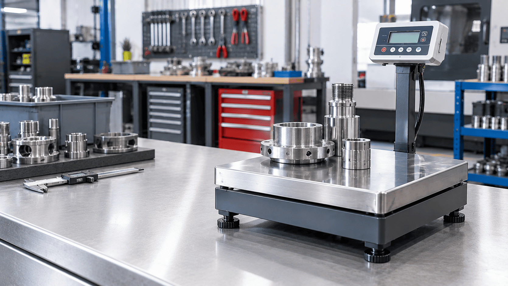

Digital Weight Indicator
Provides weight readings through a compatible indicator, depending on configuration.
01Discover robust industrial platform scales for weighing materials, components and packaged goods, with solutions for industrial requirements in Umbergaon, Gujarat.
Reliable Platform Weighing for Industrial Operations
Prime Systems offers industrial platform weighing solutions for businesses that need to weigh materials, components, cartons, containers and other goods. Platform scales combine a load-bearing platform with an indicator, with construction and capacity depending on the selected model.
When selecting an industrial platform scale, consider the maximum load, platform dimensions, required readability, installation space and working environment. Contact our team to discuss suitable available models for your operation in Umbergaon, Gujarat.
Enquire About Platform Scales
Discover platform weighing equipment for industrial materials, packaged goods and load-handling operations.
Product images may vary by model.
Industrial platform scales are used to weigh heavier goods, raw materials, components and packaged loads on a stable platform. The suitable configuration depends on rated capacity, platform size, readability, installation type and the operating environment.
Displays weight readings on supported configurations.
Platform design selected according to the goods being weighed.
Rated capacity and platform dimensions vary by model.
For suitable material, stock and goods weighing tasks.
Ask us about platform size, capacity and available configurations.
Explore the essential features and technical parameters to consider when selecting an industrial platform scale for your operation.
Provides weight readings through a compatible indicator, depending on configuration.
01Choose a rated capacity appropriate for the heaviest expected load and weighing task.
02Select platform dimensions that can accommodate the size and footprint of the goods.
03Available functions and operating features depend on the selected platform scale model and configuration.
04Review these parameters when choosing a suitable industrial platform scale.
| Product Type | Industrial Platform Scale |
|---|---|
| Weighing Capacity | Available options depend on the model |
| Readability / Resolution | Model-specific |
| Indicator / Display | Type and functions depend on configuration |
| Platform Dimensions | Size and construction vary by model |
| Power Supply | Confirm according to the selected model |
| Additional Functions | Depend on the model and configuration |
| Intended Application | Industrial materials, goods, components and packaged loads, subject to model suitability |
Specifications, available features and configurations may vary between models. Contact Prime Systems for confirmed product details.
Contact our team to discuss available models, platform dimensions, rated capacity and your application requirements.
Explore how industrial platform scales can support material and goods weighing across different industrial and commercial environments.

01Support routine weighing operations in shops, retail counters and other commercial environments using a suitable industrial platform scale.

02Weigh raw materials, components and finished goods on a platform scale selected according to production requirements and rated load capacity.

03Assist with weighing goods, stock handling and inventory-related operations using platform dimensions and capacity suited to the items being weighed.
Support ingredient weighing, product preparation and packaging workflows when the selected platform scale meets the application's requirements.

05Weigh tools, components and materials for suitable workshop applications with an appropriately selected industrial platform scale.
Help weigh goods during dispatch preparation and distribution activities, depending on the platform scale's rated capacity and intended use.
Tell us about your application and required capacity to enquire about suitable available models.
What is an industrial platform scale used for?
An industrial platform scale is used to weigh materials, components, containers, cartons and other goods placed on its platform. The suitable model depends on load capacity, platform dimensions and the working environment.
How do I choose the right industrial platform scale?
Consider the maximum load, platform dimensions, required readability, installation space and operating conditions. Contact Prime Systems to discuss suitable available models for your application in Umbergaon.
What capacities and platform sizes are available?
Rated capacity and platform dimensions vary by model. Share the size and weight of the items you need to weigh so the team can discuss suitable available options.
Can industrial platform scales be used in manufacturing and warehouses?
Yes. A suitably rated industrial platform scale can support weighing tasks in manufacturing, warehousing, stock handling and dispatch. Select a model according to the load, platform size and operating environment.
What is the difference between a tabletop scale and a platform scale?
Tabletop scales are generally used for smaller items and compact workspaces. Industrial platform scales provide a larger load-bearing surface for heavier or bulkier goods, subject to the selected model’s rated capacity.
How can I maintain an industrial platform scale?
Install the scale on a stable, suitable surface, keep the platform clean, avoid overloading and follow the manufacturer’s operating instructions. Arrange inspection or calibration when required.
Does Prime Systems provide platform scale servicing or calibration?
Please confirm service and calibration availability directly with Prime Systems. Contact the team to discuss your equipment and the support you require.
How can I enquire about industrial platform scales in Umbergaon, Gujarat?
Contact Prime Systems to discuss your application, expected load, platform dimensions and preferred configuration. The team can help you enquire about available industrial platform scale options in Umbergaon, Gujarat.
Find a suitable industrial platform weighing solution for your business. Share your load, platform size and application requirements with Prime Systems in Umbergaon, Gujarat.